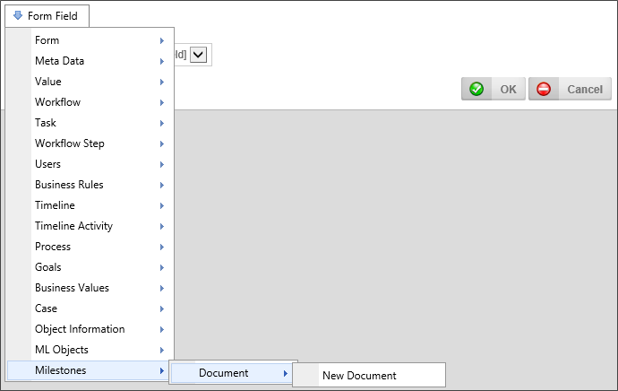

Milestones
Milestones

Returns
This system variable returns the result of all milestones, or Milestone.
SysVar Tag
{MILESTONES, OCCURRENCE=N, EVENTNAME="TextName", FORMAT="User"|"Message"|"Time"|"Date"|"Datetime"}
Modifiers
Occurrence: An integer that corresponds to the number of times the Milestone occurred. A value of -1 returns the most recent occurrence of the Milestone.
EventName: Enables you to specify a milestone name, to return only instances of that milestone.
Format: The Milestone Data you'd like to return. By default, the variable returns the Milestone Message that you configured.